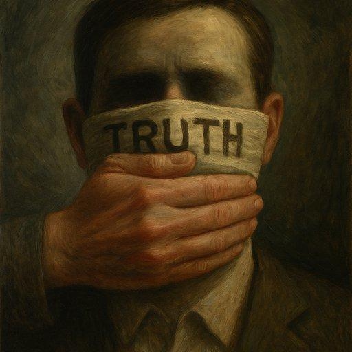

Publicado em 2025-06-03 09:33:58
Dezoito anos depois, o solo da nossa terra continua a ser escavado em nome de uma mentira. Cavam-se margens de barragens, reviram-se matas, acionam-se escavadoras e helicópteros, como se a verdade tivesse caído num poço algures entre a vergonha e a servidão diplomática.
Provas? Quais? De quê?
As verdadeiras provas foram esquecidas, ocultadas ou convenientemente ignoradas. As buscas que se fazem hoje não procuram o corpo de Madeleine: procuram manter viva a narrativa que protege os que jamais poderiam ser tocados.
Portugal, esse velho senhor cansado, transformou-se no palco submisso de um teatro inglês com cheiro a encobrimento e a notas diplomáticas. Somos os figurantes pobres, prestáveis, que vestem a farda e fazem de conta que procuram. Tudo filmado. Tudo noticiado. Tudo vazio.
Não há indício novo. Não há prova nova. Mas há ordem para continuar. E Portugal obedece. Como sempre. Porque os pais de Madeleine eram médicos. Porque conheciam ministros. Porque falavam inglês com sotaque de Oxbridge.
As buscas servem para alimentar a ficção de que houve rapto, de que os pais são inocentes, de que nós, os provincianos do sul, falhámos.
Mas falhámos mesmo? Ou fomos obrigados a silenciar o que a investigação mostrava? Os relatórios da PJ, os vestígios, os cheiros, os comportamentos estranhos. Tudo arquivado em nome das boas relações internacionais.
Os media aplaudem. Os políticos calam-se. A população encolhe os ombros. E o Estado veste o fato de criada e organiza buscas por encomenda.
Portugal tornou-se um país-tapete, onde a verdade é varrida para baixo da cortina do protocolo. Não temos o direito à indignação? Não temos coragem de dizer que o imperador vai nu?
Madeleine foi usada. O seu nome, o seu rosto, o seu destino. Tudo instrumentalizado para proteger interesses. O caso transformou-se num produto, numa saga, numa marca comercial. E Portugal, esse velho palco gasto, cedeu o cenário e os figurantes.
Mas o povo não esquece. Há uma memória coletiva que sabe, que viu, que sentiu. E que um dia, talvez, ainda escreva a verdadeira história de como uma criança morreu, e um país inteiro foi forçado a fingir que não viu.
Francisco Gonçalves, Junho de 2025. Com a verdade na lapela e o nojo na garganta.